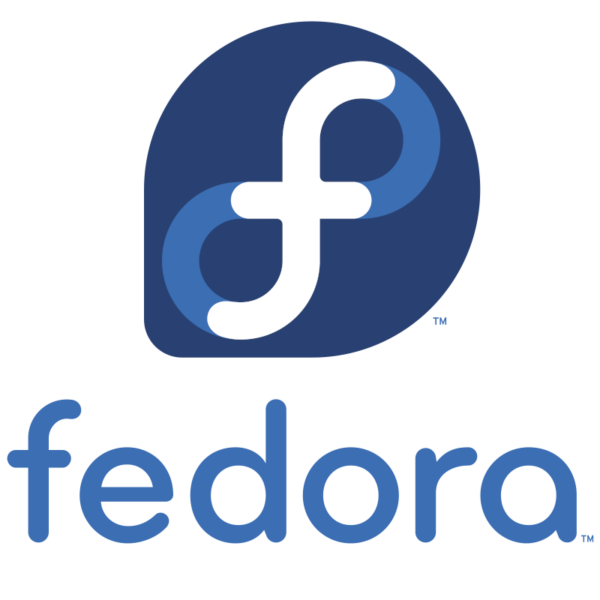
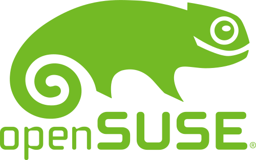

Apa itu Linux?
Linux adalah sistem operasi mirip Unix yang dibuat oleh Linus Torvalds, mahasiswa universitas
Helsinki. Linux adalah penggambaran dari Linus yang frustrasi karena MINIX(buatan profesor pebimbingnya)
tidak bebas diubah seenak hati dan UNIX(buatan lab AT&T) yang tertutup serta berlisensi.
Karena hal itu, dia menciptakan sistem operasi yang sepenuhnya terbuka dan gratis untuk umum.
Istilah yang Perlu dipahami
ada 3 istilah yang perlu dipahami terlebih dahulu, yaitu:
- Linux kernel
- GNU/Linux
- Distro
Linux kernel adalah salah satu program yang menghubungkan sistem operasi dengan hardware
GNU/Linux adalah hasil dari penggabungan Linux kernel dengan software GNU ciptaan Richard Stallman.
kenapa harus digabung? karena kita tidak bisa berinteraksi dengan kernel secara langsung dan membutuhkan
tools untuk menjalankan kernel. seiring waktu, orang biasa memanggilnya Linux agar mudah diucapkan.
sedangkan distro adalah hasil penggabungan GNU dengan Linux yang dilakukan oleh seseorang atau tim untuk disebarluaskan
karena kodenya terbuka dan bebas dimodifikasi, banyak distro berkeliaran hari ini bahkan mencapai ratusan.
untuk melihat distro sekaligus melihat distro mana yang terkenal bisa dilihat lewat distrowatch.
tetapi, jika anda hanya ingin melihat distro yang terkenal maka saya bisa menunjukkannya.
Distro yang Terkenal
Disini yang menjadi kriteria adalah distro yang sering dipakai menjadi desktop dan menjadi banyak dasar distro
sekarang karena pada dasarnya hampir semua distro adalah keturunan dari distro yang sudah ada duluan.
tanpa berlama-lama lagi, ayo kita bahas.
Fedora

Fedora adalah projek yang didirikan tahun 2003 setelah penggabungan fedora projek dengan red hat linux(RHL).
hasil penggabungan ini menghasilkan sistem operasi yang powerfull karena apapun yang menjadi default di fedora
akan manjadi default secara umum di distro lain. Turunan dari fedora antara lain; Bazzite, CentOS, Rocky Linux, dll.
Debian
Debian adalah distro yang terkenal dan berpengaruh karena kestabilannya serta package manager tool(APT) yang hebat
sehingga digunakan di banyak sekali distro hingga hari ini. Tetapi debian mempunyai kelemahan yaitu pada UI yang terkesan
jadul sehingga sering dikombinasikan dengan ubuntu. contoh distronya adalah MX Linux, PikaOS, AnduinOS, dll
Arch
Arch Linux adalah distro yang terkenal akan kesusahan dalam penginstalan karena semua dilakukan secara manual dari
package sampai desktop environment. tapi arch memiliki keunggulan, yaitu kendali penuh akan komputer karena semua hal
yang diinstal adalah package yang kita mau dan bukan bloatware bawaan sistem operasi. selain itu, arch juga dikenal karena
ringan sehingga banyak digunakan di distro yang mempunyai kecepatan respon cepat. contoh distro turunannya yaitu;
CachyOS, EndeavorOS, Manjaro Linux, dll
Distro Immutable
Distro immutable adalah distro yang menerapkan prinsip read-only pada sistemnya. Artinya, kita sebagai user tidak bisa
mengubah apapun pada sistem utamanya. Tujuannya supaya sistem yang dipakai tetap bersih seperti semula tanpa pengotor
berbeda dengan distro tradisional sebelumnya. distro immutable biasanya memiliki prinsip sendiri dan berbeda dengan distro
tradisional yang hanya berbeda tema. Untuk lebih paham, mari kita lihat beberapa distro immutable berikut ini.
Universal Blue
Universal Blue adalah distro yang masih memiliki hubungan dengan fedora atomic tapi memiliki kelengkapan driver tertutup
(seperti NVIDIA) di dalam sistem operasinya. Universal blue juga memiliki command ujust(universal just) yang membantu dalam terminal sehingga
bisa langsung pakai tanpa pusing. universal blue memliki 3 varian, yaitu:
- Bazzite
- Aurora
- Bluefin
OpenSUSE

OpenSUSE memiliki varian immutable lewat MicroOS yang dibranding ulang lewat openSUSE Aeon untuk GNOME dan openSUSE Kalpa
untuk KDE plasma. openSUSE memiliki fitur unik bernama snapshot dimana file "difoto" dan jika terjadi kesalahan maka bisa
melakukan rollback dengan mudah.